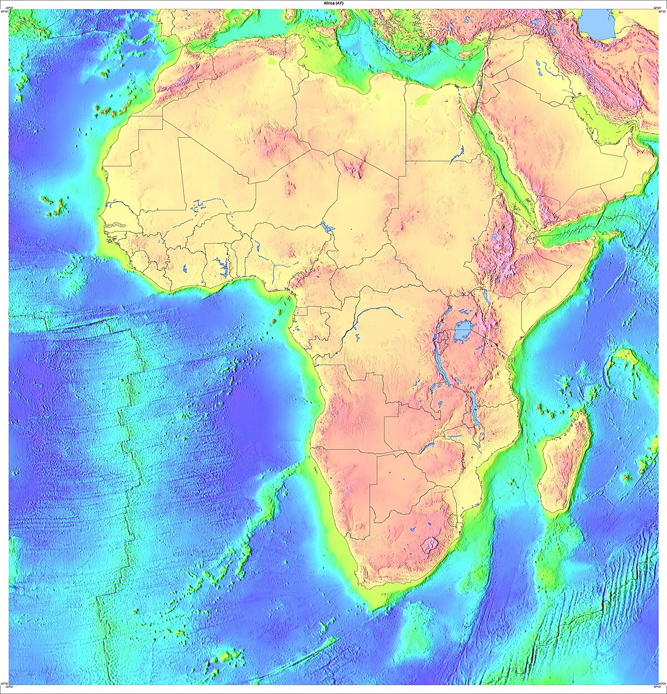
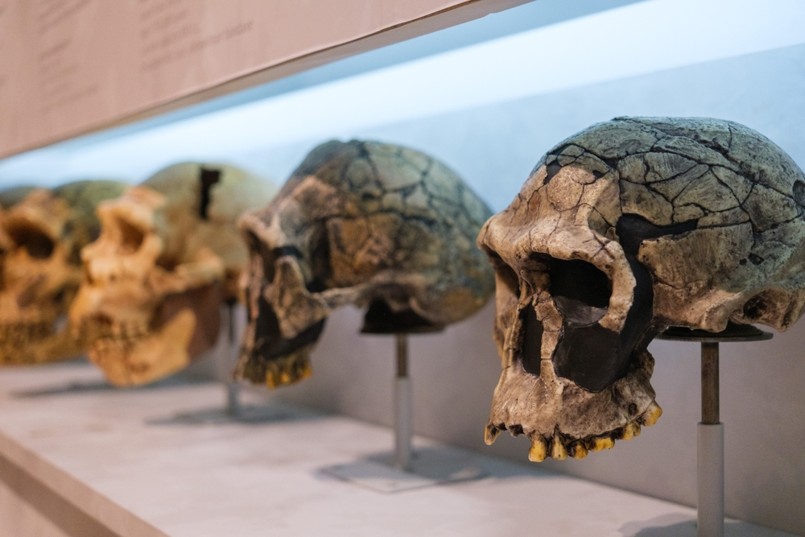
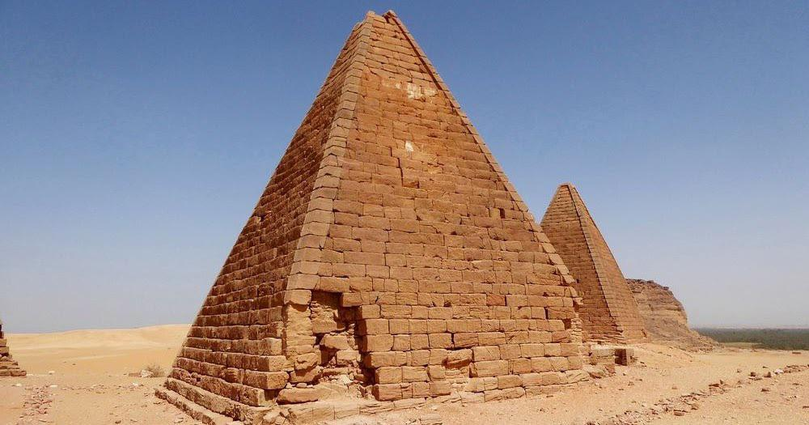

The Origins of Africa

Introduction
Africa is widely regarded as the cradle of humanity. Its rich and diverse history dates back millions of years, with archaeological and fossil evidence pointing to the continent as the birthplace of the human species. The story of Africa's origins is not only about human evolution but also the development of early civilizations, cultures, and societies that have had a profound impact on the world.
Geological and Prehistoric Origins
Africa's geological history is ancient and complex. It was once part of the supercontinent Pangaea, and later Gondwana, before drifting into its current position. The continent's terrain features some of the oldest rock formations on Earth, with parts of the African Shield dating back over 3 billion years.
Prehistorically, Africa is home to the earliest evidence of hominins. Fossils of early human ancestors such as Australopithecus afarensis and Homo habilis were discovered in the Great Rift Valley, particularly in present-day Ethiopia, Kenya, and Tanzania. These findings suggest that the evolution of early humans occurred primarily in Africa.
The Birthplace of Homo Sapiens
Modern humans (Homo sapiens) are believed to have first appeared in Africa around 200,000 to 300,000 years ago. Genetic studies and fossil records support the theory that early humans migrated from Africa to other parts of the world in waves, a process known as the "Out of Africa" migration.
This migration led to the spread of human populations across the globe, influencing the development of cultures and societies in Europe, Asia, and beyond.
Early African Civilizations
Africa is also home to some of the world's oldest and most influential civilizations. Ancient Egypt, located in northeastern Africa, was one of the first major civilizations, known for its monumental architecture, advanced knowledge of mathematics and astronomy, and written language—hieroglyphics.
In sub-Saharan Africa, kingdoms such as Nubia, Axum, Mali, Ghana, and Great Zimbabwe developed independently with complex societies, thriving trade networks, and rich cultural traditions.
This cultural mosaic illustrates the deep roots and continuous evolution of human societies on the continent.
Conclusion
The origins of Africa encompass more than just the birth of humanity; they represent the genesis of civilization, culture, and diversity. Understanding Africa's deep past helps illuminate not only the story of a continent but the shared story of all humankind.